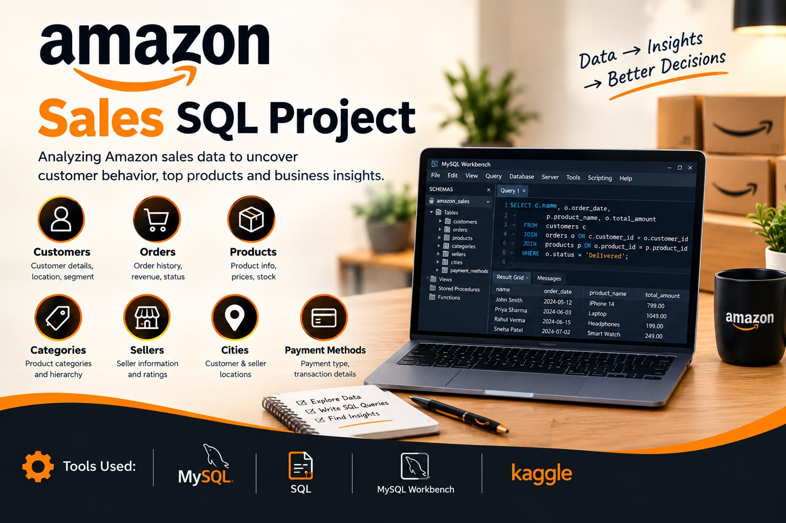
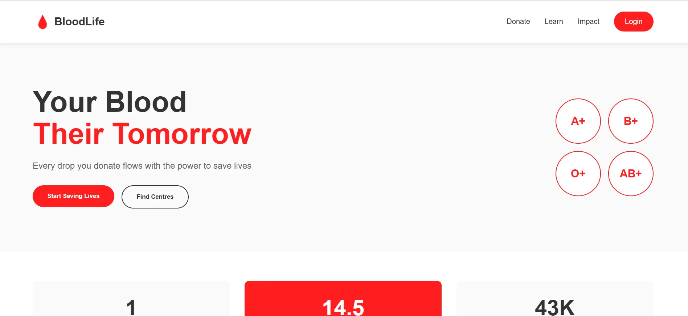

Transforming Data Into Actionable Insights & Strategic Growth
Junior Data Analyst with hands-on experience in SQL, Python, Excel, Power BI, and ETL. Passionate about data cleaning, exploratory analysis, interactive dashboards, and driving business decisions.

Building Tomorrow's
Solutions Today
I'm a Computer Science Engineering graduate and Junior Data Analyst with hands-on experience in data analysis, SQL, Python, Excel, Power BI, and ETL.
Skilled in data cleaning, exploratory data analysis (EDA), visualization, and extracting insights using MySQL, Pandas, NumPy, Matplotlib, and Power Query. Also experienced in full-stack development, with strong problem-solving skills and a passion for turning data into strategic business decisions.
1st Prize Winner
TinkerHub HerHack Hackathon 3.0
2024Education
B.Tech in Computer Science & Engineering
UKF College of Engineering, Paripally, Kollam
Tools & Technologies
BI & Excel
Data Analytics
Programming & SQL
Analytical Skills
Data Analyst Projects

Retail Sales Analytics Dashboard
Developed an interactive Power BI dashboard to analyze retail sales performance across countries, product categories, and customer segments. Created DAX measures to track KPIs including total sales, previous-year sales, year-over-year (YoY) growth, and average sales per order. Designed interactive visualizations including sales comparison charts, country-wise sales treemaps, category-wise sales charts, customer segment donut charts, and yearly top-selling product ribbon charts with slicers and navigation buttons for dynamic filtering.

Amazon Sales & E-Commerce Data Analysis
Analyzed Amazon e-commerce sales data using MySQL to identify customer, product, revenue, and sales trends. Designed relational Customers and Orders tables and solved 20+ business problems using joins, aggregations, subqueries, window functions, and stored procedures. Generated actionable business insights through SQL-based data analysis and reporting.
Academic and other projects

Point-Supervised YOLOv8
Real-time crowd detection system using advanced point supervision methodology for accurate density analysis and people counting in complex environments.

Smart Blood Donation Tracker
Comprehensive MERN stack application streamlining blood donation management with real-time donor-recipient matching and secure authentication.

DiagnosAI – Smart Health Diagnosis
AI-powered web application that predicts possible diseases based on user-described symptoms with confidence score and risk alerts.
Experience & Training
Data Analytics with Power BI
Professional Training | Luminar Technolab, Kochi
Kochi, Kerala
- Mastered SQL, Python, Excel, Power BI, data cleaning, exploratory data analysis (EDA), ETL, and data visualization.
- Gained practical experience analyzing structured datasets and extracting meaningful insights using MySQL, Pandas, NumPy, Matplotlib, and Power BI.
- Developed interactive dashboards, complex DAX KPI metrics, and data models to drive business insights.
SDE Intern
Algon Solutions Pvt. Ltd., Kochi
Kochi, Kerala
- Contributed to web application development and debugging using JavaScript during a one-month internship.
- Deepened expertise in advanced JavaScript, dynamic rendering concepts, and underlying web application architecture.
- Implemented state/session management using cookies and worked with Git for version control and collaborative workflows.
AI Symptom‑Based Disease Predictor
Personal Project | ASAP Training & Certification
Remote
- Built a Streamlit app that predicts diseases from natural‑language symptom input.
- Implemented smart symptom suggestions, confidence scoring, and high‑risk alerts.
- Integrated multi‑fallback internet insights using DuckDuckGo, Google Search, and Wikipedia.
- Leveraged Scikit‑learn (Multinomial Naïve Bayes) with TF‑IDF vectorization for ML inference.
Let's Build
Something Great
Have a project in mind or just want to chat? I'm always open to discussing new opportunities and creative collaborations.